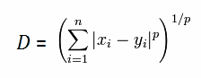
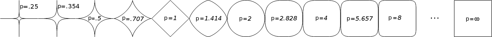
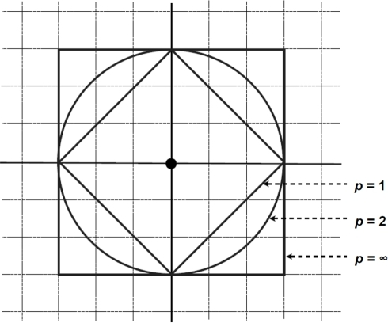
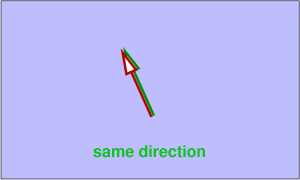
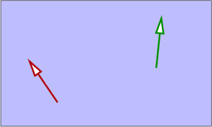
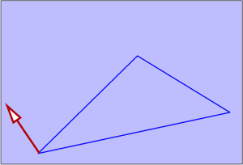
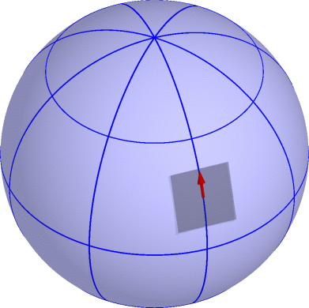
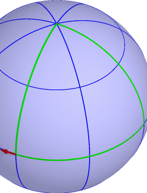
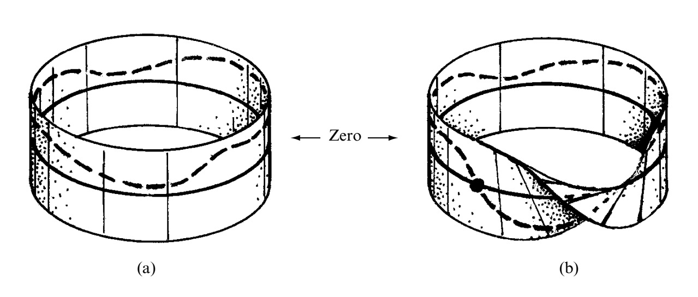

Maudlin's chapter proceeds in four stages:
Metaphysics is ontology.
Given that we can escape our conceptual system (that is, given that Kant was wrong) we should be suspicious that our current conceptual system gets it right.
"Reflection on philosophical problems has convinced me that a much larger number than I used to think... are connected with the principles of symbolism[.] The result of this is that almost all thinking that purports to be philosophical or logical consists in attributing to the world properties of language." (Russell 1923)
A property/relation is metaphysically pure iff that property/relation does not obtain in virtue of some further property/relation obtaining, such as the existence of some other thing.
This is why siblinghood is supposed to be intuitively impure (because siblinghood obtains in virtue of something else, namely parents, existing).
Substance <--> Universal
Subject <--> Predicate
"to be is to be the value of a variable"
"Clio and Maxwell have the same father."
" 'cold-hearted' and 'unsympathetic' have the same meaning."
"Clio and Maxwell have the same father."
(∃ x)(Fxc & Fxm)
" 'cold-hearted' and 'unsympathetic' have the same meaning."
(∃ x)(Mxc & Mxu)
" 'cold-hearted' and 'unsympathetic' have the same meaning."
(∃ x)(Mxc & Mxu)
" 'cold-hearted' and 'unsympathetic' are synonymous."
(SYN'cold-hearted''unsympathetic')
" 'cold-hearted' and 'unsympathetic' are synonymous."
(SYN'cold-hearted''unsympathetic')
" Clio and Maxwell are siblings."
(SIBcm)
" Clio and Maxwell are siblings."
(SIBcm)
(∃ x)(Fxc & Fxm) & (∃ x)(Mxc & Mxm)
~ (∃ x)(Fxx)
~ (∃ x)(Mxx)
~ (∃ x)(∃ y)((Fxy) & (Mxy))
An external relation is a relation which is in some sense external to its bearer in that the relation could fail to hold and its subject would still be the same.
Ex: siblinghood, studenthood, adjacency, distance
External relations are not metaphysically pure since any external relation requires that something else, in additional to the relata, exist.
Ex: Minkowski Distance



An internal relation is a relation which is internal to its bearer in the sense that the bearer of the relation would not be the thing that it is if that relation failed to hold.
Ex: Numbers, vectors, masses, charges, spins





Classical electrodynamics and modern quantum mechanics are gauge theories, meaning that they obey certain symmetries. Another way of thinking about these symmetries is that they are invariances with respect to certain classes of transformations.
Imagine we take an experiment and move it 5 meters towards the Hague. What should we expect? Why?
Lots of physical theories exhibit invariances like this. What is important for Maudlin is that the symmetry obtains because of the curvature of the space.

Gauge theories, for Maudlin, attach trope-like entities at particular spacetime points that could not be instantiated elsewhere on the manifold.
The similarity relation, then, is not intrinsic because its obtaining depends critically on the path (which, in turn, is affected by the curvature of the manifold).